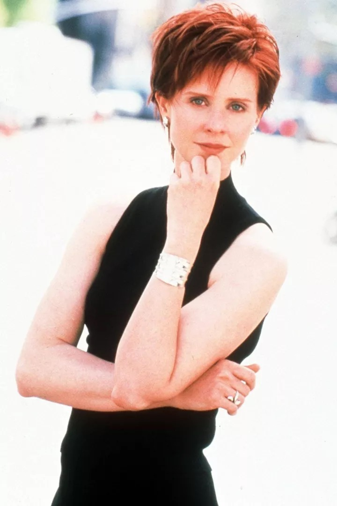
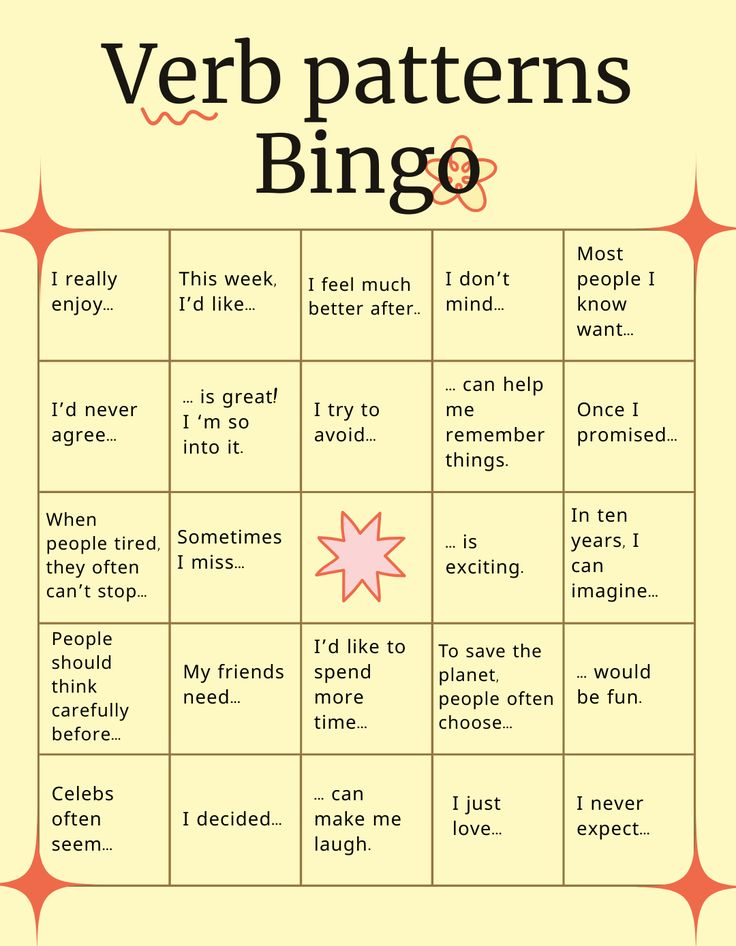

A short warm-up: you already know how to describe people, so here we only bring the four friends back and start talking.
the writer
Carrie
She writes for a newspaper about life in New York. She loves clothes and shoes.
She talks a lot, she is romantic and always late.

the lawyer
Miranda
She is a lawyer with short red hair and dark clothes. Clever, strict and funny.
She works too much and hates long conversations.
the publicist
Samantha
She works with famous people. Loud, funny and sure about herself.
She knows everybody in the city and is never afraid.
the art dealer
Charlotte
She works in a gallery with art. Polite, kind and quiet.
She always says please and thank you.
Task 1 · Who is who?
Tap a phrase, then tap the friend it belongs to. Three phrases for each of them.
Carrie
Miranda
Samantha
Charlotte
Warm-up speaking. Which of the four are you most like, and why?
Start like this: I think I’m like Miranda, because…
And one more. Choose one friend and say four sentences about her:
her job, her character, one thing she always does, one thing she has never done.
Lesson 2
Friends and drama
60 min
Four friends argue, stop talking and make up again in every season.
These are the words for exactly that — and they work for real life too.
A park bench, two friends and one long apology
When it goes wrong
They had a big argument.
She didn’t text me back.
He forgot about me.
When it gets better
I said sorry first.
We were friends again the same day.
She always helps me.
a best friendto be good friendsto be upsetto be angryto say sorryto be friends againto keep a secretto tell the truth
Task 1. Drag the lines by the ⠿ handle into the right order,
then tell the story out loud in five sentences.
Six ways to give advice
You should
the normal one, friend to friend You should talk to her today. · You shouldn’t wait.
Why don’t you…?
softer — an idea, not an order Why don’t you text him first?
I’d just…
what I would do in your place I’d just send one message.
I’d recommend…
polite and a bit more serious · + verb -ing I’d recommend talking to her face to face.
Have you tried…?
when the person already did something · + verb -ing Have you tried calling her?
If I were you…
the strongest one — keep it for the end If I were you, I would say sorry first.
— He never texts first. — Why don’t you text him today? If I were you, I would stop counting.
advice · a recommendation · a tip
advice
what to do about a problem. One form for everything —
never “advices”, never “an advice”. Can you give me some advice? · One piece of advice: talk to her.
a recommendation
what to choose: a film, a café, a book. You can count them. Any recommendations for a series? · I have two recommendations.
a tip
one small trick that works. You can count them too. Here is a tip: text her in the morning.
Problems take advice. Choices take recommendations. Tips are short and practical.
And what do you say back?
You like the advice
That’s a good idea.
I’ll try that, thanks.
You don’t
I don’t think that will work.
Maybe later. I’m not ready.
Homework · Give advice in ten seconds.
Six situations below. Your friend (Role A) says the problem — you are Role B, you answer.
For each situation do three things: 1. read Role A out loud, like a real person, not like a text; 2. give two pieces of advice, each in a different form from the table above; 3. finish with one sentence: which advice you would take yourself, and why.
Ten seconds of thinking, then speak. Record all six on your phone and send them to me.
1 · No answer
Role A: “My best friend didn’t text me back for three days. I know she read my messages.”
2 · The birthday
Role A: “I forgot my best friend’s birthday. He saw the other messages and he is really upset.”
3 · Always late
Role A: “My friend is always late. Yesterday I waited forty minutes in the rain.”
4 · The secret
Role A: “I told my friend one secret. Now the whole class knows it.”
5 · No time
Role A: “I have a test on Monday and I have little time. I can’t start.”
6 · Careful!
Role A: “I want to watch something this weekend. Any ideas?”
This one is not a problem — it is a choice. Give a recommendation, not advice.
Check yourself. Did you use Why don’t you…? at least once?
And I’d recommend…? And If I were you… in the hardest situation?
If every answer started with “You should”, do it again.
Lesson 3
What people do
60 min
Today we go one step deeper than “nice” and “funny”: what people do,
how it makes you feel, and why one bad action does not make a bad person.
Every rule has one short task right after it.
Eight million people, and every one of them did something today

Start here. Choose any square and finish the sentence out loud —
a full sentence, not two words. Five squares in a row and you shout bingo.
Warm-up · 5 min
No new words yet — answer with what you have. Think first, then speak;
full sentences, not one word. We come back to these questions after the word list.
1Is a small lie always a bad thing? Think of one real example.
2What is harder: to say sorry, or to listen when somebody says sorry to you?
3Can a good friend break a promise and still be a good friend?
4Why do people talk behind your back? Are they angry, or just afraid?
5Somebody helps you every day and never says a word about it. Do you notice?
6In the show, and in real life — do people change, or do they stay the same?
📌 Homework: Task 1 only — match the words with the translations.
Everything else in this chapter we do together in the lesson.
The real homework is in the Homework tab at the top.
1 · What people do · 8 min
to lieto tell the truthto ignore somebodyto interruptto talk behind your backto support somebodyto listento apologiseto promiseto keep a promiseto break a promiseto help outon purposeby mistake
Task 1 · Match the words. Tap a translation, then tap the box
next to the English word. Tap a full box again to take the word back.
Then press Check.
Task 2 · Now write it yourself. Matching is easy — writing is
what makes the word stay. Type the English word. to at the start is up to you.
1врать
2перебивать
3извиняться
4обещать
5нарушить обещание
6обсуждать за спиной
7специально, нарочно
8случайно, по ошибке
Say it now. Go back to the warm-up questions and answer two of them
again — this time with three verbs from the line above. One answer about the show,
one about your own life.
2 · The rule in two fingers · 5 min
👉 the thing → -ing
Point at it: the film, the song, the lesson. The thing makes the feeling.
The film is boring.
This song is amazing.
👈 me → -ed
Point at yourself. You get the feeling. People only — chairs are never tired.
I am bored.
I am excited.
Ten pairs you need
bore
The lesson is boring. → I am bored.
interest
The book is interesting. → I am interested.
excite
The concert is exciting. → I am excited.
surprise
The ending is surprising. → I am surprised.
tire
The trip was tiring. → I was tired.
relax
This music is relaxing. → I am relaxed.
annoy
His question was annoying. → I was annoyed.
confuse
The story is confusing. → I am confused.
shock
The news was shocking. → I was shocked.
disappoint
The party was disappointing. → I was disappointed.
Same verb, two endings. -ing is the thing, -ed is the person.
Task 3 · Two halves, one sentence. Every line has one verb.
The thing takes -ing, the person takes -ed.
Type both forms, then press Check answers. Say the whole sentence out loud after that.
1excite
The trip to New York was ,
so I was .
2surprise
Her answer was ,
so I was .
3annoy
His question was ,
so I was .
4tire
The long day at school was ,
so I was .
5confuse
The ending of the episode was ,
so I was .
6disappoint
The end of the season was ,
so I was .
1 The trip was exciting, so I was excited. ·
2 Her answer was surprising, so I was surprised. ·
3 His question was annoying, so I was annoyed. ·
4 The long day was tiring, so I was tired. ·
5 The ending was confusing, so I was confused. ·
6 The end of the season was disappointing, so I was disappointed.
3 · Put them in · 6 min
Task 4 · Drag and say. Put the right word in every gap,
then read each sentence out loud. Eight sentences, four of them about a person
and four about a thing — look at the ending before you drop the word.
4 · The trap · 5 min
One letter changes everything
I am bored.
Nothing interesting is happening to me. ✅ what you mean
I am boring.
People are bored with me. 😅 careful
He is confused.
He doesn’t understand. ✅
He is confusing.
Nobody understands him. 😅
the quick test
After I am / he is / she was about a real person → -ed.
Task 5 · Fix the mistake. In every sentence one word
is wrong — it is underlined in red. Type the right form of that word and press
Check answers. Then read the correct sentence out loud.
1I am very boring in this lesson.
→ I am very in this lesson.
2The ending was so surprised!
→ The ending was so !
3After the trip I was very tiring.
→ After the trip I was very .
4Are you interesting in football?
→ Are you in football?
5Sorry, I am confusing — say it again.
→ Sorry, I am — say it again.
6The news about her was very shocked.
→ The news about her was very .
1 I am very bored in this lesson. · 2 The ending was so surprising! ·
3 After the trip I was very tired. · 4 Are you interested in football? ·
5 Sorry, I am confused — say it again. · 6 The news about her was very shocking.
Task 6 · Finish it about you. No right answers here — but every
sentence must be true and longer than three words.
I am really interested in…
… is boring for me, honestly.
Last week I was surprised when…
I get annoyed when people…
The most exciting thing this month was…
English is still confusing for me when…
5 · One action is not the whole person · 6 min
What they did · who they are
the action
past, one moment: She lied to me yesterday. · That was rude.
the person
present, always: She is a liar. · He is a rude person.
the safe way
It wasn’t like her. · He doesn’t usually do that.
why it matters
Say what they did, not what they are — and the conversation stays open.
Also useful: on purpose (he knew) against by mistake (he didn’t).
Task 7 · Change the label. I give you a label — you turn it into
one action. “He is selfish” → “He didn’t help his friend when she asked.”
She is a bad friend.
He is rude.
She is annoying.
He is a liar.
They are selfish.
6 · The debate · 15 min
How to argue and stay friends
say your side
I think… · For me… · Honestly, I don’t think so.
give the reason
…because… · For example, in the last episode…
half agree
Maybe, but… · I see what you mean, but…
come back
And what about…? · So why did she…?
One rule: never stop after “I think so”. The next word is always because.
Task 8 · Pick a side. I read a sentence. You agree or you don’t,
and you give one real example — from the show or from your own life.
Then I take the other side and you answer me. Two rounds each, no one-word answers.
A small lie is fine if it protects your friend.
If somebody lies to you once, you can never trust them again.
A real friend tells you the truth, even when it hurts.
Saying sorry is easy. Doing something about it is the hard part.
You should always give a friend a second chance.
7 · One minute, no stopping · 5 min
Task 9 · The wrong thing. Start the timer and talk for 60 seconds:
think of a person in the show who did something wrong. What exactly did they do?
Was it on purpose or by mistake? Was it a bad action or a bad person?
And what would you do in their place?
Three verbs from today and two words with -ing or -ed.
I don’t correct you until the timer stops.
After the lesson
Homework
about 40 min
Everything from the three lessons in one place, plus one new rule to learn
on your own. Tasks 1, 3 and 4 you do right here: type the answer, press
Check answers, and the app says what is wrong and why. Tasks 2, 5, 6 and 7
are out loud — say them, don’t read them.
1 · The new rule: so and such
so, or such a?
so + adjective
It’s so good. · She was so tired.
such a + adjective + noun
It’s such a good song. · He is such a kind person.
the test
Is there a noun after the adjective? Yes → such a. No → so.
no “a” here
With plural or uncountable: such good friends · such bad news.
Short cut: so + one word, such a + two words.
Что это вообще такое — по-русски
И so, и such переводятся одинаково — «такой, настолько».
Они нужны, чтобы усилить признак: не просто «хороший», а «такой хороший».
Разница только в том, что стоит дальше в предложении.
so — дальше только признак и всё. The song is so good. —
песня такая хорошая. После good ничего нет, предложение кончилось.
such a — дальше признак и предмет.
It’s such a good song. — это такая хорошая песня.
После good стоит song, поэтому нужен such и артикль a.
Как выбрать за одну секунду. Посмотри, есть ли после прилагательного
существительное (предмет, человек, день, песня).
Есть — such a. Нет — so.
Когда «a» не нужна. Если предмет во множественном числе или его нельзя
посчитать: such good friends (друзья), such bad news (новости).
Артикль a бывает только с одним предметом.
Task 1 · so or such? Type one word in every gap —
so or such — and press Check answers.
Where you are wrong, the app explains why.
1This song is good.
После good ничего нет — предложение кончилось. Значит so.
2It’s a good song.
После good стоит предмет — song. Значит such a.
3The last episode was sad.
После sad ничего нет. Значит so.
4That was a bad day.
После bad стоит предмет — day. Значит such a.
5She is a kind person.
После kind стоит человек — person. Значит such a.
6I was tired after school.
after school — это не предмет при прилагательном, а обстоятельство. После tired предмета нет, значит so.
7They are good friends.
После good стоит предмет — friends, и он во множественном числе. Значит such, но уже без a.
8The ending was confusing.
После confusing ничего нет. Значит so.
1 so · 2 such · 3 so · 4 such · 5 such · 6 so · 7 such · 8 so
Task 2 · Three and three. Say three true sentences about your week
with so, and three with such a. Record them on your phone and listen once.
advicea recommendationa tipYou should…I’d recommend…Why don’t you…?to argueto make up
Chapter 3 — what people do:
to lieto tell the truthto ignore somebodyto interruptto talk behind your backto support somebodyto apologiseto promiseto keep a promiseto break a promiseon purposeby mistake
Task 3 · Do you still remember them? Close the lists above
and write the English word. to at the start is up to you.
Then press Check answers.
1болтливый
2уверенный в себе
3вежливый
4строгий
5совет (всегда без -s)
6подсказка, лайфхак
7спорить, ссориться
8помириться
9игнорировать кого-то
10сдержать обещание
11поддерживать кого-то
12специально, нарочно
And out loud. Take the five words you got wrong and say
one true sentence with each — about real people, not about “a man”.
3 · The four tenses, one more time
One table, four times
Present Simple
always, usually, every week — normal life She always says sorry first.
Present Continuous
right now, at the moment — look at it happening Look, she is texting him now.
Past Simple
yesterday, last week, two days ago — finished They had a big argument last week.
Future Simple
tomorrow, tonight, next week — a plan or a promise I will text her tonight.
The time word tells you the tense. Hear the time word first, then choose.
Task 4 · Which tense? Choose the tense in the list,
then press Check answers. The marked word that gives it away is in bold.
Task 5 · One friend, four tenses. Choose one real person and say
four sentences about them, one in each tense: what they usually do ·
what they are doing now · what they did last week ·
what they will do tomorrow.
4 · -ing or -ed · quick test
Task 6. One word is missing in every sentence. Say the full sentence.
1The film was three hours long. I was really (bore) ___.
Task 7 · Bring it to the lesson. Think of a time when somebody
broke a promise — a friend, a classmate, somebody in the show.
Make notes, don’t write the whole text, and be ready to tell it in one minute:
what they promised · what they really did · on purpose or by mistake ·
how you felt (one -ed word) · what you would do now.
Before the next lesson
✓Tasks 1, 3 and 4 done in the app, score checked.
✓Ten words said in your own sentences.
✓Four tenses about one real person.
✓Notes for the one-minute story ready.
Pocket English
Phrasebook
use it every lesson
Tick a phrase when you have used it in a real conversation —
not when you have read it.
0 / 0 used
Starting a conversation
Reacting
Opinions
When you are stuck
People
Life abroad
Rule of the course. Every lesson you use at least three phrases
from this page. Nobody cares about your grammar if you sound like a real person.
Stills of the four friends are used here for one private lesson only, provided by the teacher.
City photos via Wikimedia Commons under free licences: Central Park — Anthony Quintano, CC BY 2.0 ·
New York taxis — Z22, CC BY-SA 3.0 ·
Lower Manhattan skyline — Christian David, CC BY-SA 4.0.
And Just Like That · speaking course A1–A2.